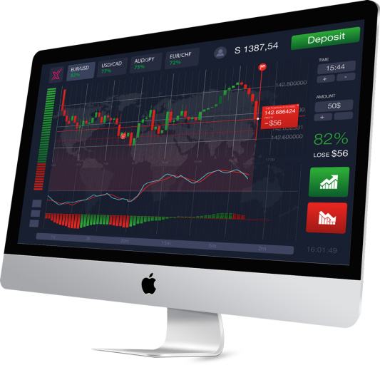

Son teknoloji işlem platformu METATRADER 5 idolFX’de !
Üstün teknoloji işlem fonksiyonları ile geliştirilmiş Metatrader 5 size farklı piyasaları tek platformda sunarak yatırımlarınızı zenginleştiriyor. Forex piyasalarında kazançlı işlemlerin yolu, ileri teknoloji ve çok çeşitli işlem platformları ile mümkündür. Metatrader 5 sunduğu özellikler ile size kazançlı yatırımın yapma imkanı sunmaktadır. idolFX MT5 platformunda, MetaTrader 5 ile yaptığınız işlemlerin hepsini yapabilirsiniz. Ek olarak MetaTrader 5 sürümüne göre eksiklikler giderilmiş ve ekstra yeni özellikler platforma eklenmiştir. Bu özellikler ile birlikte Metatrader 5, Metatrader 4’e göre daha üstün ve hızlı bir platformdur diyebiliriz.

Neden idolFX?
- Kullanışlı arayüz ve kısayol özellikleri
- Tüm işletim sistemlerine uyumlu altyapı
- Mobil, masaüstü ve tablet uyumlu
- Expert Advisor ile işlem imkanı
- Geliştirilmiş analitik araçları ile ileri düzey teknik analiz yapabilme imkanı
- Anlık haberler ve piyasa analizlerine ücretsiz erişim
- Çok daha hızlı işlem açıp-kapatma
- Ücretsiz alım-satım sinyalleri
- Anlık piyasa derinliği
- Daha fazla indikatör, grafik ve emir verebilme